Message Radius
Our Message Radius platform will help your business understand and engage your customers at the specific locations that make sense.
Documentation

iBeacon Services
Radius Networks' Android iBeacon Service library - make Android versions of your iOS apps that use iBeacons, or come up with new Android-only creations.
DocumentationProximity Kit
Dead simple geofences and ibeacons for your Mobile App. Stop worrying about sync strategies and server operations; use our iOS SDK and point-and-click map editor.
Learn More